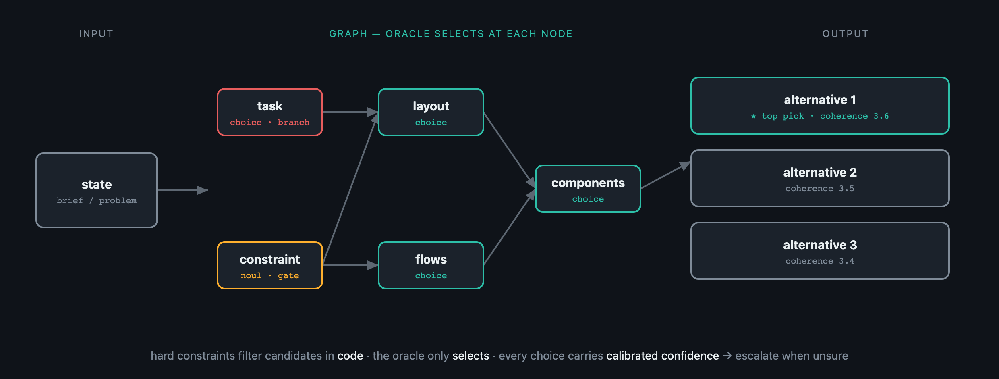

Resolve a DAG of enumerated decisions with a fast judgment oracle.

When one model generates a whole artifact it samples — and the modal sample is the generic one ("slop"). A judgment oracle like Jev doesn't generate; it discriminates: given a state, a typed question, and bounded candidates, it returns a choice with calibrated confidence. jev-dag factors the artifact into a DAG of dependent decisions and lets the oracle select at each node, while code holds the invariants.
Where the candidate sets are closed — a fixed design system, component catalog, or approved tech radar — every decision is a cheap enumerated selection: no generation, slop-free by construction, fast, parallelizable, and fully auditable.
# pip install -e ".[dev]" ; export JEV_KEY=...
from jev_dag import Decision, Graph, run, JevOracle
graph = Graph([
Decision("task", "What is the primary task?",
candidates=lambda state, ans: {"compare": "Compare records",
"triage": "Work a queue"}),
Decision("layout", "Which layout supports that task?",
depends_on=["task"], # sees the 'task' answer
candidates=lambda state, ans:
{"split": "Side by side"} if ans["task"] == "compare"
else {"list_detail": "List + detail"}), # hard constraint, in code
])
result = run(graph, "Agents compare two tickets before resolving.", JevOracle())
print(result.top.answers) # {'task': 'compare', 'layout': 'split'}
Your candidate recipe filters options before the oracle sees them — it can't pick something invalid.
Each node receives every ancestor's answer, not just execution order.
Mark a node to keep its top options, producing multiple alternatives, then rank them by a coherence score.
Every choice carries a confidence — low confidence flags where your vocabulary has a gap, and drives escalation.
Jev is the default; any object implementing choice/noul/score works. Tests use a deterministic one.
Stdlib only, Python ≥ 3.10. The engine is small enough to read in one sitting.